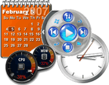
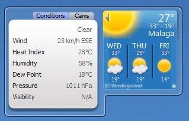
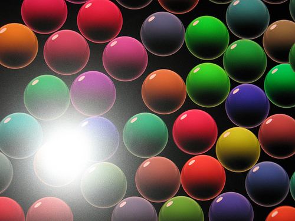
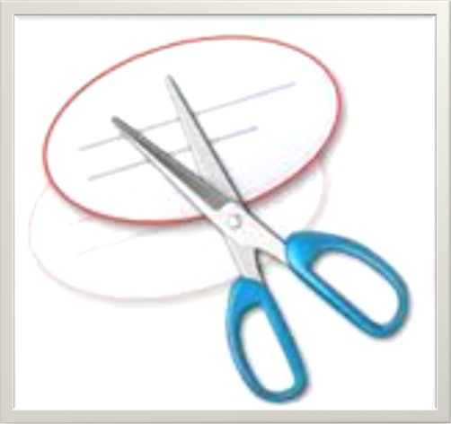
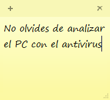

1. Introducción
En la práctica de hoy veremos como personalizar nuestro escritorio, añadir gadgets, así como hacer uso de utilidades que vienen preinstaladas en Windows 7 y que pueden servirnos en las tareas del día a día.
2. Cambiando el fondo de escritorio
Descarga este fondo de pantalla y guárdalo en el escritorio. ¿Sabríais establecer esa imagen como el fondo de escritorio activo?
{kind=link}
- Pulsa con el botón derecho sobre el escritorio y selecciona la opción "Personalizar"
- Pulsa ahora en la opción "Fondo de escritorio"
- Dile que quieres "Examinar" las carpetas para buscar la imagen.
- Elige la imagen que has descargado y establécela de fondo de escritorio.
3. Gadgets
Vamos a probar a poner unos cuantos gadgets en el escritorio.
- Pulsa el botón derecho sobre el escritorio y selecciona la opción Gadgets.
- Instala los gadgets del reloj, el tiempo, el calendario, y otro más (el que tú quieras).
- Accede a las opciones de configuración de cada gadget para ver cómo personalizarlo.
4. Salvapantallas
Veamos ahora como cambiar el salvapantallas y sus opciones.
- Pulsa con el botón derecho sobre el escritorio y selecciona la opción "Personalizar"
- Accede a la sección del Salvapantallas y prueba otro salvapantallas diferente del que viene por defecto.
5. Herramienta de recorte de imagenes
Vamos a utilizar la herramienta de recorte para generar una imagen de nuestro escritorio
- Conéctate a la web flickr.com y busca una foto interesante.
- Abre la aplicación recortes y saca una captura de la zona interesante de la foto.
- Guarda la imagen en el escritorio.
6. Notas
Finalmente, vamos a ver cómo utilizar las notas de recordatorios.
- Abre la aplicación notas rápidas.
- Escribe un par de notas con el siguiente texto: Llevar a Milú al veterinario, y Preguntar la receta de tarta de manzana al vecino.
- Situa las notas en una zona del escritorio donde no molesten.